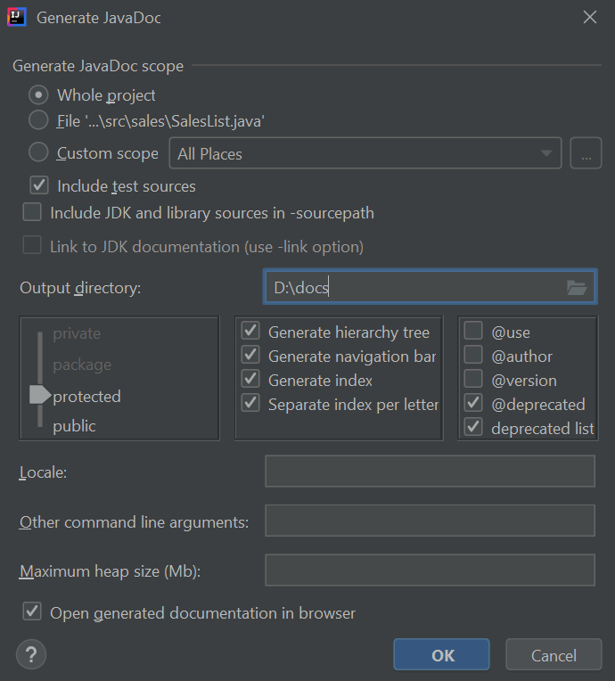

<!DOCTYPE html>
<html lang="es">
	<head>
		<meta charset="utf-8">
		<title>Software documentation</title>
		<meta name="viewport" content="width=device-width, initial-scale=1.0">
		<link rel="stylesheet" href="../../../reveal/dist/reveal.css">
		<link rel="stylesheet" href="../../../reveal/dist/theme/white.css" id="theme">
		<link rel="stylesheet" href="../../../reveal/plugin/highlight/custom.css">
	</head>

	<body>
		<div class="reveal">
			<div class="slides">
                <section data-markdown>
<script type="text/template">
## Software documentation
### Documentation with IntelliJ
</script>
</section>

<section data-markdown>
<script type="text/template">
## Generating documentation

Menu *Tools* > *Generate Javadoc*

<div align="center">
    
</div>

</script>
</section>

<section data-markdown>
<script type="text/template">
## Exercise

Generate the documentation for Exercise 1 and 2 of [previous document](../09a)

</script>
</section>
    

            </div>
		</div>

		<script src="../../../reveal/dist/reveal.js"></script>
		<script src="../../../reveal/plugin/zoom/zoom.js"></script>
		<script src="../../../reveal/plugin/markdown/markdown.js"></script>
		<script src="../../../reveal/plugin/highlight/highlight.js"></script>
		<script>

			// Also available as an ES module, see:
			// https://revealjs.com/initialization/
			Reveal.initialize({
				controls: false,
				progress: false,
				center: true,
                hash: true,
                width: "80%",

				// Learn about plugins: https://revealjs.com/plugins/
				plugins: [ RevealZoom, RevealMarkdown, RevealHighlight ]
			});

		</script>

	</body>
</html>
